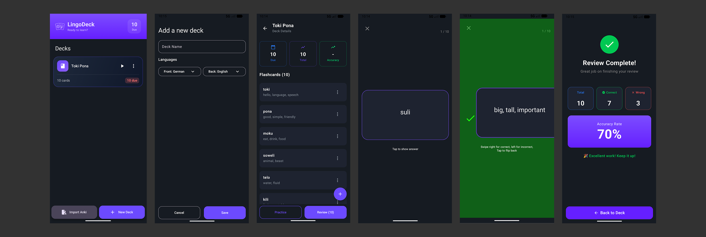

Lingodeck
Team Members
- Tijana Mijatović
- Diana Simonicova
Project Description
Lingodeck is a native Android app designed to make language learning efficient and permanent.
Built with Kotlin and Jetpack Compose, it uses a
Spaced Repetition System (SRS) algorithm to schedule flashcard reviews at the optimal moment,
just before a user is likely to forget a word. This way users can maximize their retention while not wasting study time.
Download LingoDeck
Note: You may need to enable "Install from Unknown Sources" in your Android settings to install this app.
App Concept
1. Use Case
Efficient Vocabulary Acquisition:
The primary use case is daily vocabulary study for language learners. Instead of reviewing static lists or paper flashcards
(which leads to over-studying known words and under-studying difficult ones), the user opens Lingodeck once a day.
The app automatically presents only the specific cards that are "due" based on the user's past performance,
handling the complex scheduling logic in the background.
2. Target User
- Language Learners: Anyone learning a new language who wants to optimize their vocab studying.
3. User Flow & Prototype
The user flow demonstrates how a user navigates from opening the app to completing a study session.
graph TD
A[Start App] --> B[Deck List Screen
View all language decks]
B -->|Click '+'| C[Add Deck Screen
Create new topic]
C -->|Save| B
B -->|Select 'German'| D[Deck Detail Screen
View Chart & Stats]
D -->|Click 'Add Flashcard'| E[Add Card Screen
Input Front/Back]
E -->|Save| D
D -->|Click 'Start Review'| F[Review Screen
Front of Card appears]
F -->|Tap Card| G[Review Screen
Back of Card revealed]
G -->|Swipe Left| H[Grading: Fail
Reset Interval to 1 day]
G -->|Swipe Right| I[Grading: Pass
Increase Interval e.g. 6 days]
H --> J{More Cards?}
I --> J
J -->|Yes| F
J -->|No| K[Summary State
'Review Complete']
K -->|Back| D

High Fidelity Prototype
Screen Breakdown:
- Deck List (Home): The entry point where users manage different languages (e.g., German, Spanish).
- Deck Detail (Dashboard): A view showing the "Upcoming Reviews" bar chart and a list of all cards. This allows the user to see their workload for the week.
- Study Mode (The Core Loop): The clean interface where cards are presented. Users interact via gestures (swiping) to grade their memory retention, which immediately updates the database schedule.
4. Git Repo
https://git.nwt.fhstp.ac.at/cc241005/ccl3-ws2025